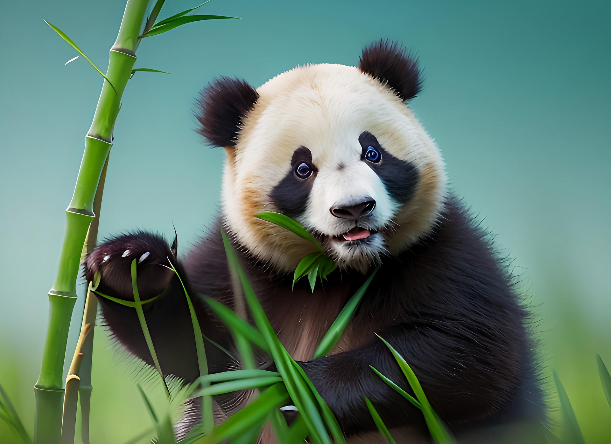

<-Menu principal
Oso panda
OSO PANDA
(Ailuropoda melanoleuca)

El oso panda habita en las montañas de China, en bosques densos de bambú. Es un animal solitario y tranquilo que pasa la mayor parte del tiempo comiendo, ya que el bambú tiene pocos nutrientes. Aunque pertenece al grupo de los carnívoros, su dieta es casi completamente vegetariana. Es activo principalmente durante el día y le gusta descansar en zonas frescas.
Caracteristicas:
- TIENEN EL CAMUFLAJE PERFECTO PARA SU HÁBITAT:
El distintivo pelaje blanco y negro del panda gigante tiene dos funciones: camuflaje y comunicación. La mayor parte de su cuerpo (la cara, el cuello, el vientre y la espalda) es de color blanco, lo que le ayuda a esconderse en hábitats nevados. Sin embargo, los brazos, las piernas y el contorno de los ojos son de color negro; perfecto para integrarse en la sombra.
- COMO UNA BARRA DE MANTEQUILLA:
Entre 90 y 130 gramos: ese es el peso de un oso panda al nacer. Parece mentira que una criatura rosa y del tamaño de una barrita de mantequilla pueda convertirse, años después, en un animal de hasta 150 kg de peso y más de un metro y medio de longitud.
- SON OSOS, PERO A MEDIAS:
El estudio de su ADN lo engloba entre los miembros de la familia de los osos (ursidae), siendo el oso de anteojos su pariente más cercano. Sin embargo, tienen una particularidad: a pesar de que poseen el sistema digestivo de un carnívoro, su organismo ha sido adaptado a una dieta vegetariana.
- MUCHO BAMBÚ…
Pueden pasar entre 10 y 16 horas al día comiendo. Y aunque el 90% de su dieta se basa en el bambú, también pueden comer ocasionalmente huevos, pequeños animales e insectos o carroña. También se sabe que los pandas buscan en las tierras de cultivo calabazas, frijoles, trigo y alimento para cerdos domésticos.
- PERO, ¿POR QUÉ ESTÁN “GORDITOS” SI PRÁCTICAMENTE SOLO COMEN BAMBÚ?
Debemos recordar que los pandas tienen el sistema digestivo de sus ancestros carnívoros. Esto les impide procesar la materia vegetal. Por eso, aunque coman 20 kg de bambú al día, solo pueden aprovechar en torno al 20% de sus nutrientes.